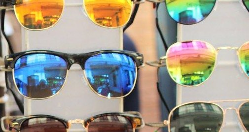

Kurtköy OptikGözlük, güneş gözlüğü, kontakt lens ve gözlük tamiri. Pendik Kurtköy'de, Sütçü İmam Caddesi'nde.

Hangi camdan bakmak istersiniz?
Şeffaf cam: numaralı gözlüklerin camı. Renk vermez; ışık olduğu gibi geçer.
Güneşte kısılan gözler, sapı sallanan gözlük, yenilenecek lens. Hepsi için aynı kapı. Yukarıdan bir cam rengi seçin: bu site o camdan bakılıyormuş gibi renk alır, siz de farkı görürsünüz.
Pzt–Cmt 09:00–19:30, Pazar 12:00–19:00
Vitrin standında neler var?
Gözlükçünün askılı standı gibi: her sırada bir iş. Dokunun, o konunun sayfasına geçin.
Tamir tezgâhı: önce derdi anlatın
Gevşeyen tek bir vida bütün gözlüğü kullanılmaz hâle getirebilir. Tamir sayfasındaki fişte belirtiyi seçin, ilgili parçayı çizimde görün, mesajı hazır hâlde gönderin.
- Vida ve menteşeSallanan sap, düşen vida, yerinden çıkan cam.
- BurunlukSararan, sertleşen, iz bırakan ya da düşen burunluklar.
- Sap ve sap ucuEğilen sap, kulak arkasında baskı, burundan kayan gözlük.
Reçeteden gözlüğe
Numaralı gözlük birkaç adımda hazırlanır. Her adımda ne olduğunu bilmek, seçim yaparken işinizi kolaylaştırır.
Reçete göz doktorundanGözlük ve lens reçetesini göz doktoru düzenler. Gözlükçü, reçeteye göre camı ve çerçeveyi hazırlar.
Göz kontrolünüzün üzerinden uzun zaman geçtiyse ya da görüşünüzde bir değişiklik fark ettiyseniz önce göz doktorunuza görünün; yeni gözlüğü güncel reçeteyle yapmak en doğrusu.
Reçeteniz
Göz doktorunuzun yazdığı reçeteyle gelin ya da fotoğrafını WhatsApp'tan gönderin.
Çerçeve seçimi
Yüzünüze oturan, burnunuzu sıkmayan, gün boyu taşıyabileceğiniz bir çerçeve. Aynaya bakıp hemen karar vermeyin; takıp mağazada biraz dolaşın.
Ölçüler
Göz bebekleriniz arasındaki mesafe ve camın çerçevedeki yüksekliği ölçülür. Progresif camda bu ölçü daha da önemlidir.
Cam seçimi ve hazırlık
İnceltilmiş cam, kaplamalar, ışıkla koyulaşan cam gibi seçenekler konuşulur. Hazırlık süresi cam tipine göre değişir; siparişte net gün söyleriz.
Ayar ve teslim
Gözlük yüzünüze göre ayarlanır: saplar, burunluklar, eğim. Zamanla gevşerse ayar için uğrayın.
Pzt–Cmt 09:00–19:30, Pazar 12:00–19:00
Bugün dükkânın güneşi nerede?
Yay, bugünkü çalışma saatlerimizi gösteriyor; güneş şu anki saatte duruyor. Pazartesiden cumartesiye 09:00–19:30, pazar 12:00–19:00 açığız.
Kurtköy OptikSütçü İmam Cd. No:3, Kurtköy34912 Pendik/İstanbul
Sık sorulanlar
Telefonda en çok sorulanları burada topladık. Cevabını bulamadığınız soru için WhatsApp'tan yazın.
Gözlüğüm ne zaman hazır olur?
Cam tipine ve reçetenize göre değişir. Siparişi verirken net gün söyleriz.
Reçetemi göndererek fiyat alabilir miyim?
Evet. Reçetenizin fotoğrafını WhatsApp'tan gönderin; düşündüğünüz çerçeveyi ve cam tercihinizi de yazın, bilgi verelim.
Reçeteyi nereden alırım?
Gözlük ve kontakt lens reçetesini göz doktoru düzenler. Muayeneden sonra reçetenizle gelin ya da fotoğrafını gönderin.
Eski çerçeveme yeni cam takılır mı?
Çoğu çerçeveye takılabilir; ama çerçevenin sağlamlığı ve biçimi belirleyicidir. Gözlüğünüzü getirin ya da fotoğrafını gönderin, birlikte bakalım. Ayrıntılar numaralı gözlük sayfasında.
Bozuk gözlüğümü getirmeden sorabilir miyim?
Evet. Tamir fişini doldurup fotoğrafla birlikte gönderin. Fotoğraftan görebildiğimiz kadarını söyleriz; kesin bilgi gözlüğü gördükten sonra.
Pazar günü açık mısınız?
Evet, pazar 12:00–19:00 arası açığız. Pazartesiden cumartesiye 09:00–19:30.